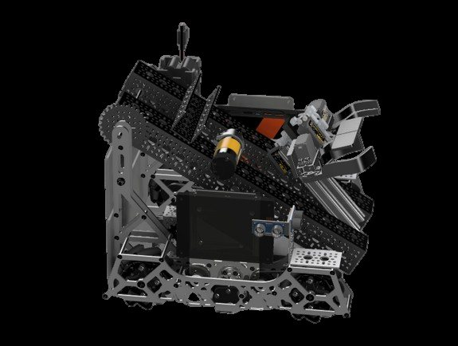
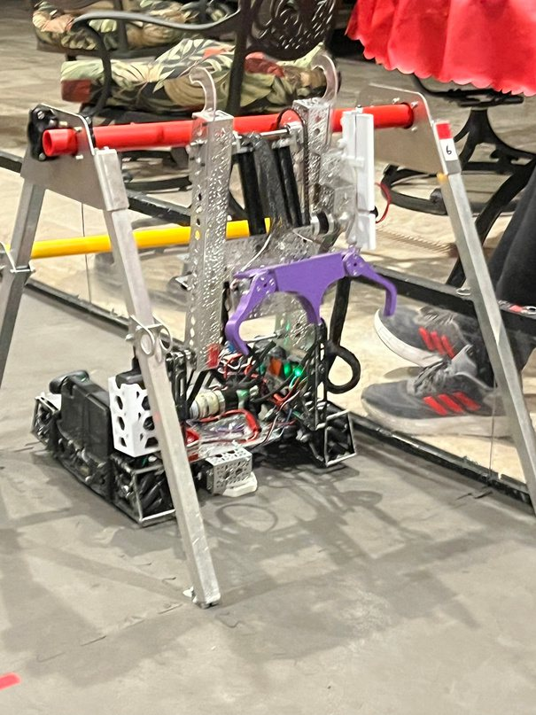
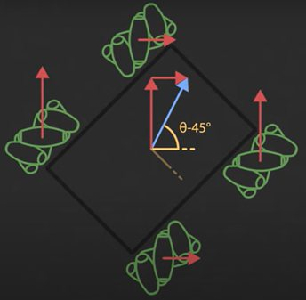

01 · Hardware
Design Highlights
Drivetrain
Custom aluminum side plates with 3D-printed pulleys and HTD5 belts at 13.7:1, lengthened to 16.25" to fit the arm motor and odometry pods.
Arm & hang
A 28:1 worm gear sized from a torque calculation lets the robot lift itself. A second rail fixed uneven claw travel.
Claw
3D-printed pincers at 100% infill, with time-of-flight color sensors that auto-close the claw when a pixel is detected.
Lift extender
A 5-joint mechanism (1 motor, 4 servos) that matches the backdrop angle, automated to 6 set positions.






02 · Vision
Finding the Team Element
An OpenCV pipeline finds the largest red object in the camera frame, draws a bounding box around it, and reports its centroid. It estimates distance from the camera's focal length, which we calibrated by placing the element at a known distance:
One problem we hit: OpenCV and AprilTag detection each created their own camera object, so AprilTags stopped scanning. The fix was to run the OpenCV pipeline during initialization, close it, and then hand the same camera to the AprilTag pipeline.

03 · Autonomous
Correcting Drift
- Problem: encoder-only movement slid when strafing and built up error over long distances, especially on the far side of the field.
- Fix 1: three-pod dead-wheel odometry with RoadRunner trajectories.
- Fix 2: AprilTags and four ultrasonic sensors reset RoadRunner's position at each pickup. A linear-regression correction brought heading and distance to within 0.1–0.3".